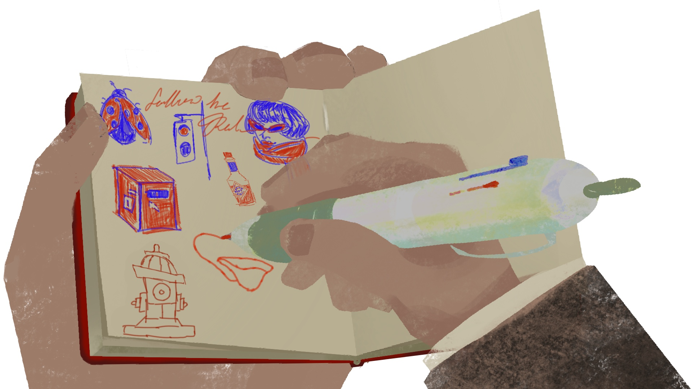
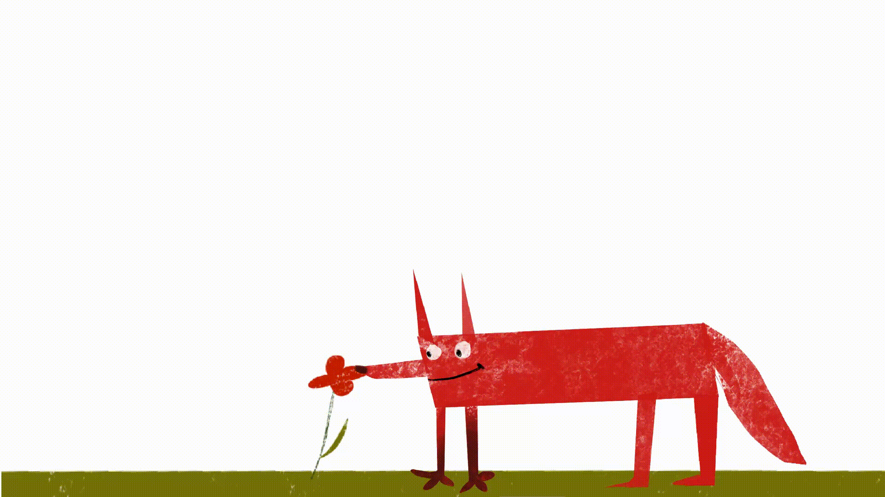
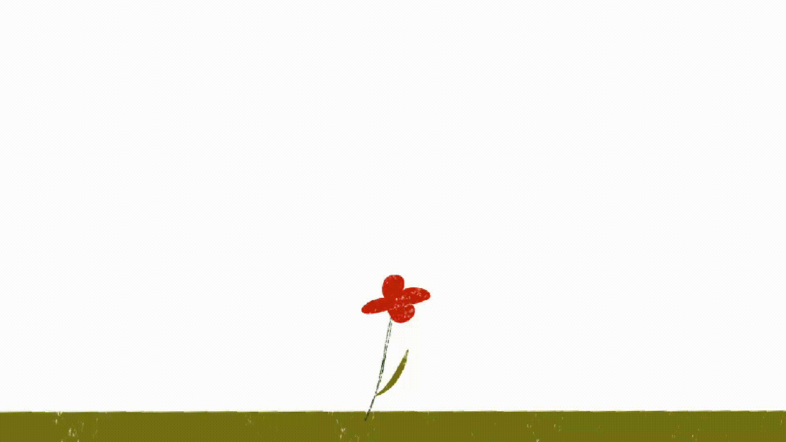

Follow the Red
Back
This animation explores color as narrative through an old man who wanders the world tracing and sketching everything red. His gentle ritual leads him to a striking red flower, only to be disrupted by a sudden encounter with a red dog.
The piece embraces a flat, abstract, and playful style with red as its central focus.



